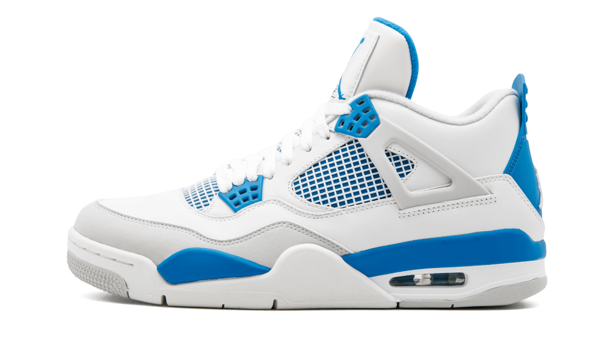

NIKE
AIR JORDAN 4
O Nike Air Jordan 4 Military Black é a combinação perfeita de estilo clássico e pegada urbana. Ele se destaca pelo visual limpo em couro branco com detalhes em preto e aquela camurça cinza elegante na ponta do pé. O modelo traz as icônicas 'asas' de suporte nos cadarços e a redinha lateral que ajuda na respiração. Com o amortecimento Air visível no calcanhar, ele garante muito conforto e firmeza para o dia a dia. É aquele tênis versátil que manda bem em qualquer rolê.
